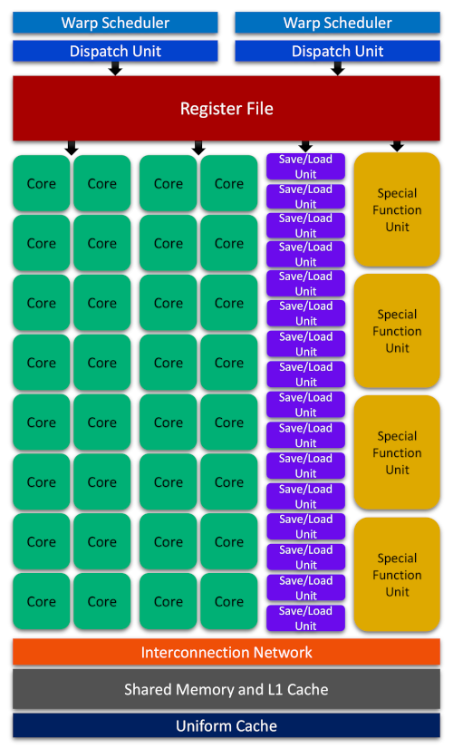
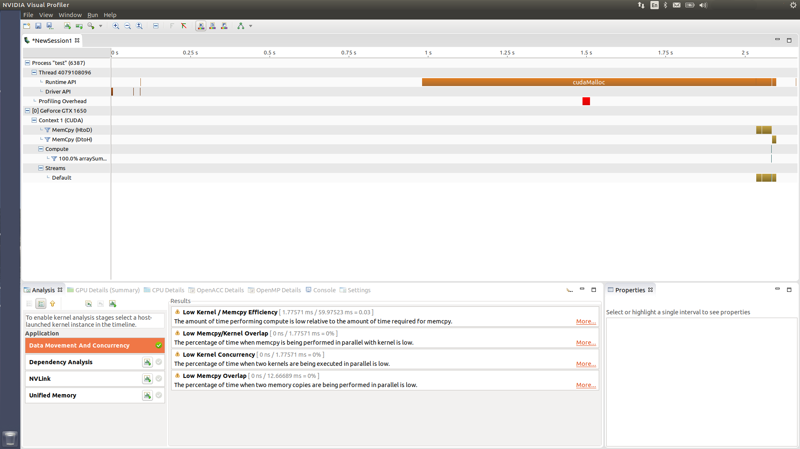
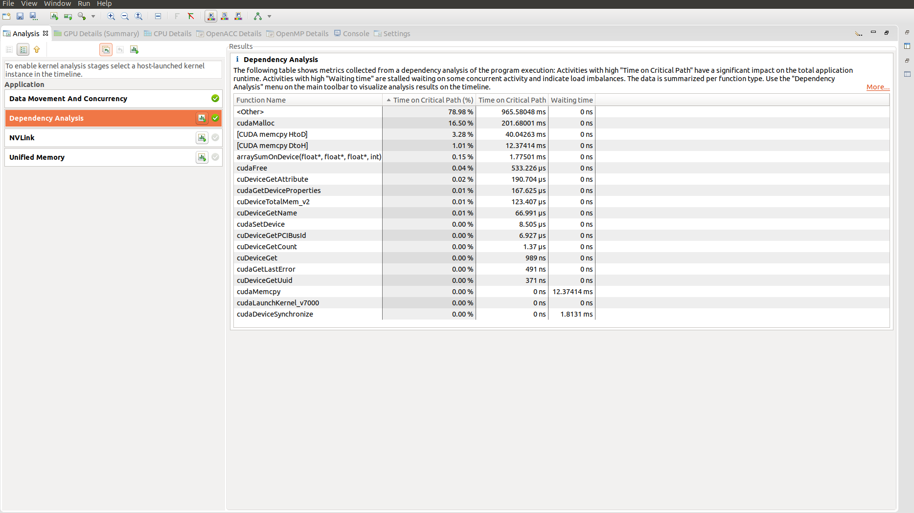

CUDA Execution Model#
Overview
Questions:
What is CUDA execution model?
How insights from GPU architecture helps CUDA programmers to write more efficient software?
What are streaming multiprocessors and thread warps?
What is profiling and why is it important to a programmer?
How many profiling tools for CUDA programming are available and which one(s) should I choose?
Objectives:
Understanding the fundamentals of the CUDA execution model
Establishing the importance of knowledge from GPU architecture and its impacts on the efficiency of a CUDA program
Learning about the building blocks of GPU architecture: streaming multiprocessors and thread warps
Mastering the basics of profiling and becoming proficient in adopting profiling tools in CUDA programming
1. GPU Architecture#
We previously mentioned that the sole knowledge of the semantics in CUDA programming will not probably be enough for achieving the best possible performance in practical applications. Today’s smart compilers can largely mitigate this issue by optimizing our codes. Nevertheless, writing a CUDA program based on insights about the GPU architecture and limitations of the device in use, offers significant advantages over blind coding and allows for the best possible thread organization and kernel configuration to maximize the performance. As such, CUDA execution model provides a logical view of thread concurrency within the SIMT framework and bridges between the streaming multiprocessors (SMs), as the central building block of GPU architecture, and the improvement of memory access and instruction throughput.
The SMs partition the thread blocks into the units of 32 consecutive threads called warps which can be scheduled for execution by warp schedulers. Within a warp, the consecutive threads in blocks have unique IDs and are indexed in ascending order starting from 0. For a given thread block, the number of warps can be calculated using the following formula
$$ \tag{1}\label{EQ:WARPPERBLOCK} \text{WarpsPerBlock} = \bigg\lceil\frac{\text{threadsPerBlock}}{\text{warpSize}}\bigg\rceil, $$
where $$ \lceil \cdot \rceil $$ in Eq. \eqref{EQ:WARPPERBLOCK} is the ceiling function and threadsPerBlock is defined as
$$ \tag{2}\label{EQ:THRDPERBLOCK} \text{threadsPerBlock} = \sum_q \text{block.}q \qquad \quad \text{where} \qquad q \in {x, y, z } $$
According to Eqs. \eqref{EQ:WARPPERBLOCK} and \eqref{EQ:THRDPERBLOCK}, a warp is never distributed between different thread blocks. CUDA manages valuable and limited resources such as registers and shared memory on SMs and distributes them among all threads. The limitations of these resources affects the number of active warps that can be created and the level of SIMT parallelism that can be realized in a particular SM as a result. As such, in order to maximize the GPU utilization and achieve the best performance through increasing the number of active warps with respect to the limited resources, a proper thread organization and execution configuration would be of imperative. For example, if we organize a $4 \times 20$ array of threads in a 2-dimensional block (total of 80 threads/block) using CUDA on the software side, the device will allocate 3 warps for this block on the hardware side resulting in the allocation of resources targeted for supporting 96 threads. As such, 16 threads in one of the three warps remain inactive while still consuming (wasting) the allocated resources.
Note
Although from the logical point of view, threads can be organized within 1-, 2- and 3-dimensional blocks, from hardware perspective, all threads can only exist in a one-dimensional world.
All threads in a warp execute the same instruction on their own private data. Therefore, maximum efficiency can be realized if all 32 threads are on the same execution path. However, the execution of different instructions (different execution paths) by threads within a warp causes warp divergence. The diverged threads within a warp will execute each execution path in the serial mode (loss of parallelism) and disable those threads that took a different execution path. As such, warp divergence should be avoided at all costs because it results in serious performance deteriorations. Note that warp divergence can only happen among the threads of the same warp and would be irrelevant if threads of different warps are considered. This fact about the relation between GPU architecture and software performance should provide a hint regarding the importance of having some knowledge about the hardware aspects and CUDA execution model.
Let us look at the main parts of a Fermi SM from a logical perspective to be able to gain some insights about the hardware micro-architectures in NVDIA GPU devices.
With each architecture release, NVIDIA has attempted to introduce new technological breakthroughs or major improvements over predecessor models. Therefore, although the essential parts of the Fermi architecture illustrated above remains somewhat similar across different architectures, each architecture might offer a very different hardware design for its SMs. For example, in Turing SM series, 16 trillion concurrent floating-point operations and integer operations per second are supported. Turing also features a unified architecture for enhanced shared memory, L1, and texture memory cache. Tensor core processors in Turing architecture accelerate deep learning training and inference up to 500 trillion tensor operations per second. Finally, the evolutionary real-time ray tracing (RT) core performance in Turing architecture was improved by about 8 times over its predecessor architecture, Pascal.
2. Profiling Tools#
The profiling tools help CUDA programmers to better understand, analyze and find opportunities to improve the performance and efficiency of a CUDA program in a systematic way. NVIDIA provides three major tools for profiling a CUDA program:
NVIDIA Visual Profiler (NVVP): A graphical software that provides a timeline for analyzing the CPU/GPU execution activities and identifying the optimization opportunities for improving the performance of the CUDA program
NVIDIA Profiler (NVPROF): A command-line-based profiling tool for collecting the profiling data and the CUDA-related activities on both CPU and GPU
NVIDIA Nsight Tools: An interactive next-generation kernel profiler tool for CUDA applications
Since both nvvp and nvprof profilers are going to be deprecated in future CUDA releases, NVIDIA recommends migrating to NVIDIA Nsight System and NVIDIA Nsight Compute for GPU/CPU sampling, and tracing purposes, and GPU kernel profiling, respectively. As such, in this tutorial we are going to present a brief overview the basics of traditional profilers, nvvp and nvprof. We will adopt the Nsight Compute tools in our future intermediate and advanced level tutorials which will be based on profiling-driven optimization approaches toward CUDA programming.
2.1. Command-Line NVIDIA Profiler#
Let us adopt nvprof to analyze the timings in our [Summation of Arrays on GPUs]({{site.baseurl}}{% link _episodes/03-cuda-program-model.md %}#3-summation-of-arrays-on-gpus) program, which we had broken it down into multiple source files in the previous [lesson]({{site.baseurl}}{% link _episodes/04-gpu-compilation-model.md %}#2-compiling-separate-source-files-using-nvcc). The nvprof profiler can be easily customized to provide different contents and ways of collecting data on various GPU/CPU activities through adopting the following semantics
$ nvprof [options] [application] [appOptions]
Since nvprof can give the time spent on each GPU kernel and CUDA API
function calls, we will not need to use the chronometer() C-based function.
Therefore, let us comment out or remove those function
calls and their corresponding print functions from our gpuVectorSum.cu
source file which should look like the following
/*================================================*/
/*================ gpuVectorSum.cu ===============*/
/*================================================*/
#include <stdlib.h>
#include <stdio.h>
#include <cuda_runtime.h>
#include "cudaCode.h"
extern "C" {
#include "cCode.h"
}
/*************************************************/
int main(int argc, char **argv) {
printf("Kicking off %s\n\n", argv[0]);
/* Device setup */
int deviceIdx = 0;
ERRORHANDLER(cudaSetDevice(deviceIdx));
/* Device properties */
deviceProperties(deviceIdx);
/*-----------------------------------------------*/
/* Fixing the vector size to 1 * 2^24 = 16777216 (64 MB) */
int vecSize = 1 << 24;
size_t vecSizeInBytes = vecSize * sizeof(float);
printf("Vector size: %d floats (%lu MB)\n\n", vecSize, vecSizeInBytes/1024/1024);
/* Memory allocation on the host */
float *h_A, *h_B, *hostPtr, *devicePtr;
h_A = (float *)malloc(vecSizeInBytes);
h_B = (float *)malloc(vecSizeInBytes);
hostPtr = (float *)malloc(vecSizeInBytes);
devicePtr = (float *)malloc(vecSizeInBytes);
/* Vector initialization on the host */
dataInitializer(h_A, vecSize);
dataInitializer(h_B, vecSize);
memset(hostPtr, 0, vecSizeInBytes);
memset(devicePtr, 0, vecSizeInBytes);
/* Vector summation on the host */
arraySumOnHost(h_A, h_B, hostPtr, vecSize);
/*-----------------------------------------------*/
/* (Global) memory allocation on the device */
float *d_A, *d_B, *d_C;
ERRORHANDLER(cudaMalloc((float**)&d_A, vecSizeInBytes));
ERRORHANDLER(cudaMalloc((float**)&d_B, vecSizeInBytes));
ERRORHANDLER(cudaMalloc((float**)&d_C, vecSizeInBytes));
/* Data transfer from host to device */
ERRORHANDLER(cudaMemcpy(d_A, h_A, vecSizeInBytes, cudaMemcpyHostToDevice));
ERRORHANDLER(cudaMemcpy(d_B, h_B, vecSizeInBytes, cudaMemcpyHostToDevice));
ERRORHANDLER(cudaMemcpy(d_C, devicePtr, vecSizeInBytes, cudaMemcpyHostToDevice));
/* Organizing grids and blocks */
int numThreadsInBlocks = 1024;
dim3 block (numThreadsInBlocks);
dim3 grid ((vecSize + block.x - 1) / block.x);
/* Execute the kernel from the host*/
arraySumOnDevice<<<grid, block>>>(d_A, d_B, d_C, vecSize);
ERRORHANDLER(cudaDeviceSynchronize());
/*-----------------------------------------------*/
/* Returning the last error from a runtime call */
ERRORHANDLER(cudaGetLastError());
/* Data transfer back from device to host */
ERRORHANDLER(cudaMemcpy(devicePtr, d_C, vecSizeInBytes, cudaMemcpyDeviceToHost));
/* Check to see if the array summations on
* CPU and GPU yield the same results
*/
arrayEqualityCheck(hostPtr, devicePtr, vecSize);
/*-----------------------------------------------*/
/* Free the allocated memory on the device */
ERRORHANDLER(cudaFree(d_A));
ERRORHANDLER(cudaFree(d_B));
ERRORHANDLER(cudaFree(d_C));
/* Free the allocated memory on the host */
free(h_A);
free(h_B);
free(hostPtr);
free(devicePtr);
return(EXIT_SUCCESS);
}
After re-compiling our code, prepend the bash running command with nvprof as follows
$ nvcc gpuVectorSum.cu cCode.c cudaCode.cu -o gpuVectorSum
$ nvprof ./gpuVectorSum
The resulting output will be similar to the following
Kicking off ./test
==5906== NVPROF is profiling process 5906, command: ./test
GPU device GeForce GTX 1650 with index (0) is set!
Vector size: 16777216 floats (64 MB)
Arrays are equal.
==5906== Profiling application: ./test
==5906== Profiling result:
Type Time(%) Time Calls Avg Min Max Name
GPU activities: 71.57% 36.369ms 3 12.123ms 12.075ms 12.160ms [CUDA memcpy HtoD]
24.93% 12.669ms 1 12.669ms 12.669ms 12.669ms [CUDA memcpy DtoH]
3.50% 1.7770ms 1 1.7770ms 1.7770ms 1.7770ms arraySumOnDevice(float*, float*, float*, int)
API calls: 78.54% 196.20ms 3 65.401ms 190.15us 195.82ms cudaMalloc
19.84% 49.555ms 4 12.389ms 12.210ms 12.840ms cudaMemcpy
0.74% 1.8394ms 1 1.8394ms 1.8394ms 1.8394ms cudaDeviceSynchronize
0.24% 591.60us 1 591.60us 591.60us 591.60us cudaGetDeviceProperties
0.23% 570.08us 101 5.6440us 495ns 254.44us cuDeviceGetAttribute
0.20% 490.82us 3 163.61us 146.21us 195.84us cudaFree
0.16% 387.42us 1 387.42us 387.42us 387.42us cuDeviceTotalMem
0.04% 110.59us 1 110.59us 110.59us 110.59us cuDeviceGetName
0.01% 26.566us 1 26.566us 26.566us 26.566us cudaLaunchKernel
0.00% 9.2890us 1 9.2890us 9.2890us 9.2890us cuDeviceGetPCIBusId
0.00% 9.1680us 1 9.1680us 9.1680us 9.1680us cudaSetDevice
0.00% 5.6390us 3 1.8790us 686ns 4.2030us cuDeviceGetCount
0.00% 3.5500us 2 1.7750us 550ns 3.0000us cuDeviceGet
0.00% 1.5830us 1 1.5830us 1.5830us 1.5830us cuDeviceGetUuid
0.00% 401ns 1 401ns 401ns 401ns cudaGetLastError
The output is a mixture of C-based printf() function results and
what nvprof has printed. In this output, ==5906==, shows the process
ID (PID) which is assigned by the operating system to the application’s
execution. The == <PID> == also signifies the starting point in every
nvprof message section. The timing units are given in seconds (s),
milliseconds (ms), microseconds (us) or nanoseconds (ns).
The GPU activities part within the Profiling results section of the
nvprof output demonstrates that about 96% of GPU’s activities were focused
on performing data transfer and non-computational tasks while around only
4% of the device’s efforts were directed to the actual computation.
The columns Calls, Avg, Min, and Max show the number of calls,
average, minimum and maximum timings for these number of function calls,
respectively. Clearly, if there is only one call to a specific function,
Min, Max, and Avg columns show the same number.
This simple example is only a toy model, but enough to illustrate the typical conclusions one can reach when analyzing a CUDA program using profiling tools. For example, it shows that the task at hand is not “data-intensive enough” to be suitable for heterogeneous GPU+CPU parallelization due to the large ratio of non-computational tasks’ overhead such as data transfer and memory allocation over the target computational instruction (i.e., the array summation). The simplicity of this example also rules out the possibility of making major changes to the algorithmic aspects of the code which might lead to significant performance improvements. The API calls part of the Profiling results section of the nvprof output focuses on CUDA (runtime and driver) API calls which allows us to have a fine-grid look at the events happening behind the scene.
Note
The profiling results of nvprof are directed
to stderr by default. You can use the --log-file <fileName> option
within the nvprof command line to save the output in a file named
<fileName>.
2.2. NVIDIA Visual Profiler#
After the compilation step, instead of running the executable with nvprof profiler, one can profile it using nvvp by creating an (executable) session. Upon opening the executable file from nvvp, we can choose from a list of profiling options and methods such as guided analysis to be able to collect data from our CUDA program. Guided analysis gives us systematic suggestions which help us find opportunities within our code for performance improvements.
The main graphical user interface for nvvp is illustrated in the following figure where the main screen is split into separate panels and organized as views
The main section at the top of our screen is the timeline view detailing the GPU and CPU activities in your program as a function of execution time. Timelines consist of timeline rows, each of which shows the beginning and the end of the lifetime of activities indicated by the corresponding row label. Sub-rows might also be used for overlapping activities.
The analysis view panel manages the application analysis and presents the results. There are two modes of analysis: (i) guided, and (ii) unguided. In the guided analysis mode, nvvp walks you through a list of analysis stages to clarify what factors limit the performance of your application and where you can find opportunities in your program for improvement. In the unguided mode, the profiling results are collected and presented to you in such a way that you, instead of system, choose the focus stages and decide which one takes the priority to be further investigated. In the figure presented above, the bottom-left and middle panels, i.e., the analysis and results views represent the profiling analysis stages and results, respectively in the unguided mode. The Data Movement and Concurrency stage in this case, gives us four possible places that need improvements for performance optimization. The first result, for example, is what we had inferred from timing results of nvprof: the ratio of actual computation on the device over the GPU time spent on non-computational tasks is small.
The Dependency Analysis stage, which we is shown in the following figure, provides profiling information on the timings as well as correlation or dependency of various activities during the program lifetime. Please refer to the CUDA Toolkit documentation for further details about other view types and different aspects of profiling in nvvp.
Key Points
CUDA execution model
Streaming multiprocessors and thread warps
Profiling tools for CUDA programming